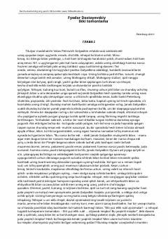

QGolyadkin o'z qiyofadoshi bilan uchrashib, ruhiy inqirozga yuz tutadi.
Fyodor Dostoevskiyning 'Qiyofadosh' (Egizak) asari titulyar maslahatchi Yakov Petrovich Golyadkinning hayotini tasvirlaydi. Asar qahramonning o'z qiyofadoshi — ikkinchi bir Golyadkin — bilan to'qnashuvini va uning ruhiy inqirozini kuzatadi. Bu Dostoevskiyning inson psixologiyasini chuqur tahlil qilgan dastlabki asarlaridan biri hisoblanadi.